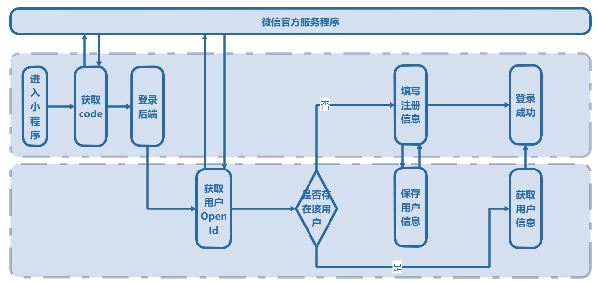

上文中说过OpenId是微信用户在小程序里的唯一识别码，获取了它，就等于有了用户Id，以方便之后用户敏感的所有操作。那么如何去获取它呢？
微信提供wx.login方法来获取一个叫做code的东西，通过code + 微信小程序密钥，来对https://api.weixin.qq.com/sns/jscode2session 发起请求，就可以获取用户的openId了。
// 调用 wx.login 获取用户 code
wx.login({
success: function (res) {
console.log(res.code)
}
})
通过以上代码可以放到app的onload方法中，打开小程序就取得用户的code，下一步就需要将code发送给后端服务程序。获取用户的OpenId了。 【前端代码】
// 获取用户openid
getOpenid: function () {
let that = this
wx.login({
success: function (res) {
console.log(res.code)
wx.request({
method:"POST",
// 这里填写用于自己后台用户登录的地址
url: that.globalData.baseURL + "/auth/login",
data: res.code,
success: function (res) {
if (res.data.code === "200"){
console.log(res.data.data)
}
},
fail: function (err) {
console.log(err)
}
})
}
})
},
【后端代码java为例，service层】
// 输入为前端所传来的用户code
public Map<String, Object> login(String code) {
// **1**.向微信服务器发起请求，获取用户信息
// ConstantConfig.getSessionKeyUrl = "https://api.weixin.qq.com/sns/jscode2session"
// ConstantConfig.appId 小程序appId ：
// 公众平台设置 -> 开发管理 -> 开发设置 -> appId
// ConstantConfig.appId 小程序secret ：
// 公众平台设置 -> 开发管理 -> 开发设置 -> 生成AppSecret
// ConstantConfig.grantType = "JSAPI" 小程序为JSAPI
String url = ConstantConfig.getSessionKeyUrl
+ "?appid=" + ConstantConfig.appId
+ "&secret=" + ConstantConfig.secret
+ "&js_code=" + code
+ "&grant_type=" + ConstantConfig.grantType;
JSONObject httpResult = HttpUtils.httpGet(url);
// **2**.收到数据，判断是否有错
Map<String, Object> result = new HashMap<>();
String openid = "";
String skey;
if (httpResult.get("errcode") != null) {
result.put("errcode", httpResult.get("expires_in"));
} else {
// **3**.微信服务器传回有效数据，判断用户登录状态是否过期，没有就刷新一下状态
openid = httpResult.get("openid").toString();
skey = httpResult.get("session_key").toString();
if (openid == null) {
result.put("code", "400");
return result;
}
}
// **4**. 返回用户 openid
result.put("code", "200");
result.put("openid", openid);
return result;
}